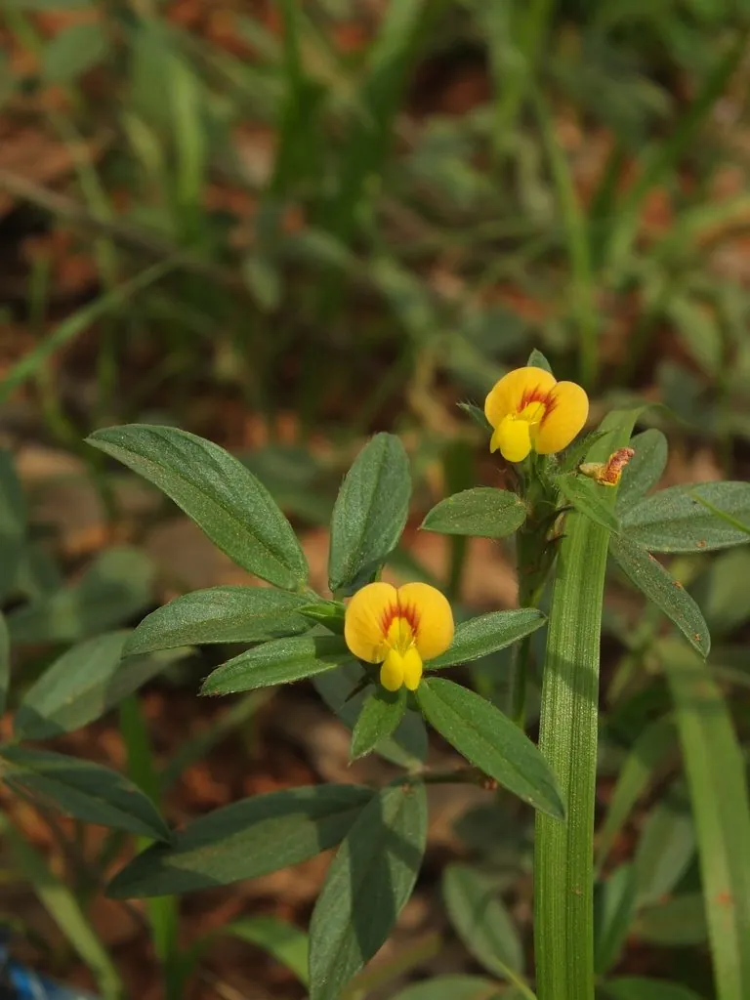

农作物与经济植物 · 植物界
柱花草 Stylosanthes guianensis

豆科笔花豆属多年生草本，花黄色、荚果具钩状喙，耐旱耐酸，是热带地区重要的牧草与覆盖绿肥作物。
- 分类
- 门被子植物门纲木兰纲目豆目科豆科属笔花豆属
- 栖息环境
- 热带酸性土壤的旱地、果园与坡地，耐旱、耐酸、耐瘠薄
- 地理分布
- 原产南美洲；中国广东、广西、海南、云南等地栽培，热带地区广泛种植
- 保护级别
- IUCN 暂无评估；栽培广泛，部分地区归化
物种志
柱花草为多年生草本或半灌木，高 30–100 厘米，茎直立或斜升，多分枝，被短柔毛。叶为三出复叶，小叶披针形至椭圆形，长 2–5 厘米。花小，黄色，生于顶生的穗状花序中；荚果扁平，具明显的钩状喙，内含 1 粒种子，种子褐色。
柱花草原产南美洲，广泛栽培于热带地区，在中国广东、广西、海南、云南等地种植，耐旱、耐酸、耐瘠薄，是热带酸性土壤上的优良牧草。它的茎叶富含蛋白质，可作牛、羊饲料；根系发达、覆盖力强，常用于果园生草、护坡与水土保持。柱花草的固氮能力可改良酸性土壤，是热带农业中重要的绿肥作物。在华南的芒果、荔枝园中，它常被用作生草覆盖。
形态与习性
- 株高30–100 厘米，茎多分枝
- 花期6–10 月，花小、黄色
- 果期9–11 月，荚果具钩状喙
- 光照喜光，短日照作物
- 水分耐旱，忌积水
- 土壤耐酸、耐瘠薄，适应酸性红壤
- 主要用途牧草、果园生草、绿肥与水土保持
趣味知识
- 柱花草的荚果带一个钩状喙，成熟后容易粘附在动物皮毛上传播。
- 它特别耐酸，能在 pH 4.5 左右的酸性红壤上生长。
- 柱花草是热带果园生草的常用草种，既能固氮又能抑制杂草。
- 它的茎叶蛋白含量较高，是热带地区牛、羊的重要饲料。